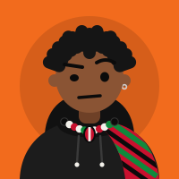

Thirty seconds. Be honest, Malebo can tell anyway.

Malebo is waiting
Tell me the truth…
Calm Coach says
Slowly, slowly. Discipline is a journey. Okay is okay. Pure greatness.
Motivator says
Let's gooo! This is the energy! Day 24, here we come!
Pressure Friend says
Come on, you! Get it together. Tomorrow we start early.
Careful, friend
"The very last one"? That's a lie. Hit the panic button first.
Tick everything that counts. Each win is +10 XP. CSS adds them up below.
Check-in +20 XP ·
Day 24, +20 XP, and a new bead on your bracelet.